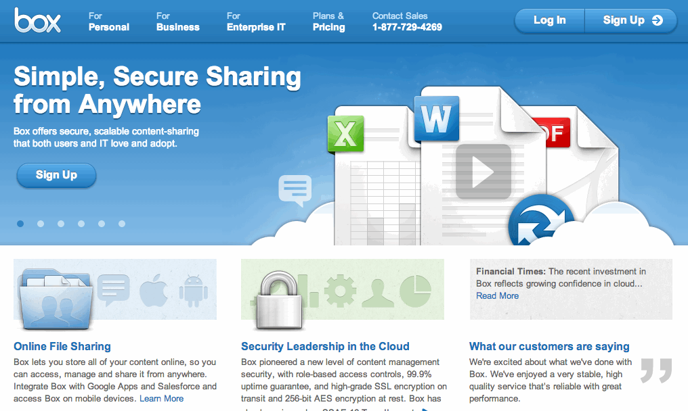
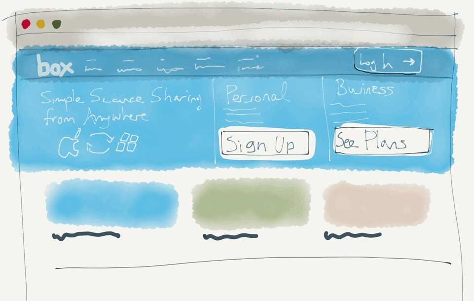
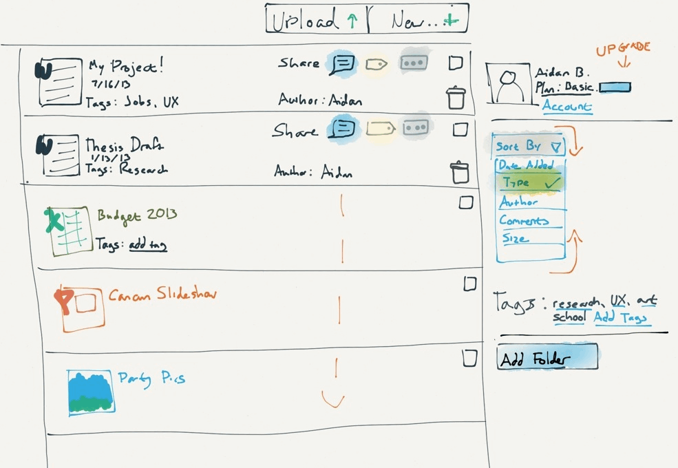
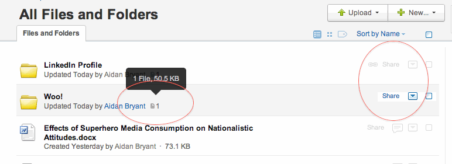
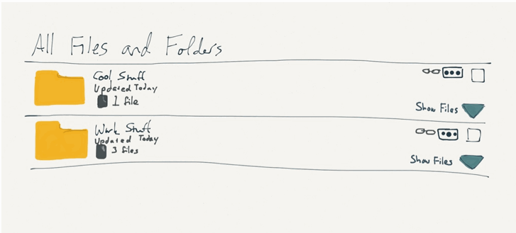

Hello Box!
I'm newish to the industry, and my first job after grad school was at an agency, which means that for the last year I've been working under NDA. I have a lot of awesome experience identifying, critiquing, and advising solutions to usability issues.... and I can't show you any of it. That's why I've made you a present: a mini-portfolio demonstrating what I could and will do for Box if I were part of your team!
Enjoy.
Problem: Confusing Login
Whenever I try to log into my Box account, I invariably click "sign up" by accident. The "Sign Up" button is where I expect the Log In link to be, as most websites place the login in the top right corner. The white arrow only reinforces my impulse.
my Solution
I sacrificed the carousel image to place a static branding image on the left side of the page. Visual weight is given to Sign Up and See Plans (personal and business, respectively), immediately attracting new users' attention without confusing users who are trying to Log In. The new Log In button borrows the white arrow from before. The three boxes at the bottom can cycle as necessary, rather than the banner image.
In testing, I would use analytics to verify that other users were clicking Sign Up, backing out, and clicking Log In instead, determining whether my problem is due to UI or absentmindedness.
Problem: Difficult to edit documents

When I wanted to add tags to my documents, it took me a little while to find them buried in the dropdown menu. Adding the tag was simple, but once it was saved, the tag did not appear in the document list, which caused me to think that it had not saved correctly. The tags are only visible if you open the document on its own page. There are other functions that were only apparent after a bit of searching, such as the ability to sort by tag or document type. Editing and categorizing the files was frustrating, and in "real life" I probably would have given up.
my Solution
I pulled out some of the more commonly-used functions, such as comment, tags, and delete, and placed them in the document row for quick access. I removed the account information from right column, which would now be accessed from "Account" link. This allows the bulk of the page to be devoted to organizing and interacting with documents. I also added redundancy (for example, multiple ways to sort and add tags). The "sort by" option is now more obvious, and the "More" button has been converted to a more recognizable visual trigger (ellipsis).
I based this redesign on my own heuristic intuition, and the icons that I pulled into the main list represent functions that I personally use often, or that I have seen represented on other sites. In reality, I would use analytics and user testing to determine what the 10-20% most-used functions were and adjust the icons accordingly.
Problem: Folders are useful, but inconvenient to navigate
Folders display inconsistently - why does a get-link graphic appear for one ("LinkedIn Profile") but not the other ("Woo!")? Additionally, there is no way to preview the specific contents of each folder- a new page has to be launched instead.
my Solution
I made the icons consistent, allowing users to link to both folders. Most of the details are consistent with the original design, but I added a dropdown arrow in the bottom right corner of each folder row. When clicked, the arrow would expand a list of the folders' contents, which would then be editable, consistent with the normal list view.
Wrapping up
I hope this little project has given you an idea of my ability to both critically analyse UX/UI issues, and to create an alternative design or interaction based on my observations. If this was a work assignment, I would have approached it slightly differently; for example, I would have done testing with participants other than myself, looked at site analytics, and/or created more interactive prototypes. This is a fair representation of my thought process and rough design sensibility - I hope it's been enlightening!